La classification de Hornbostel et Sachs (1914) répartit les instruments par mode de production du son. Au Maroc, les quatre grandes familles sont représentées, avec une richesse particulière dans les percussions. Les catalogues de la BnF et de la Bpi recensent des instruments parfois oubliés : aguâl, lîra, rhaïta nfîr, ta’nja, tbîlat, zamr.
Famille
Principe
Instruments représentatifs
Cordophones
Le son est produit par la vibration d’une ou plusieurs cordes.
Chaque fiche suit cinq critères : origine et histoire, fabrication, technique de jeu, rôle musical et évolution.
3.1 Instruments à cordes (luths, vièles, cithares, harpes)
Le guembri (sintir, hajhuj) الكمبري / الستيرCordophone
Origine et histoireLuth-basse des Gnawa, hérité de l’Afrique de l’Ouest. Également appelé hajhuj (variante). Chottin (1939) note déjà son origine « soudanaise » et sa caisse « rectangulaire ».
FabricationCaisse monoxyle recouverte de peau de cou de chameau ; manche sans frettes ; trois cordes en boyau ou en nylon. Le hajhuj désigne une variante morphologique.
Technique de jeuÀ la fois percussif et mélodique : les doigts frappent la peau tandis que le pouce pince les cordes.
Rôle musicalInstrument central et sacré de l’orchestre gnawa, réservé au maâlem.
ÉvolutionAdaptations contemporaines : micros pastille, égaliseurs et prises jack pour l’amplification scénique (voir les travaux de Sum sur la sersera du guembri).
Le lotar (loutar) الوطار / اللوطارCordophone
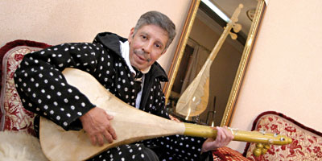
Origine et histoireLuth de la tradition amazighe du Souss et du Moyen Atlas, associé aux Rwaïss et aux groupes amazighs.
FabricationCaisse piriforme recouverte de peau ; manche ; trois ou quatre cordes selon les variantes (cordes en nylon).
Technique de jeuPincé avec un plectre ; son sec et rythmique.
Rôle musicalMélodie et accompagnement du chant ; en dialogue avec le ribab chez les Rwaïss.
ÉvolutionInstrument emblématique du patrimoine amazighe. L’anthologie des rwaïyes (1990), préparée par le ministère de la Culture marocain et la Maison des Cultures du Monde, documente son rôle dans l’ensemble ribab–lotar–percussions.
Le ribab / rabab الربابCordophone
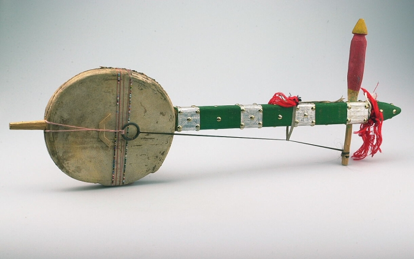
Origine et histoireVièle à pique de la tradition du Souss (ribab) ; variante andalouse (rebab) à deux cordes en forme de barque.
FabricationRibab : caisse recouverte de peau, une corde en crins. Rebab andalou : caisse en barque, deux cordes.
Technique de jeuFrotté à l’archet ; timbre continu, proche de la voix. Technique du « détaché » caractéristique du jeu d’archet soussi.
Rôle musicalPorte la mélodie ; instrument identitaire du Souss (ribab) et voix de l’orchestre andalou (rebab).
ÉvolutionFacture artisanale, parfois amplifié en concert. L’encyclopédie SAGE souligne le rôle du ribab monocorde chez les ruais.
Attention : ne pas confondre le ribab amazigh (monocorde) et le rebab andalou (deux cordes).
L’oud العودCordophone
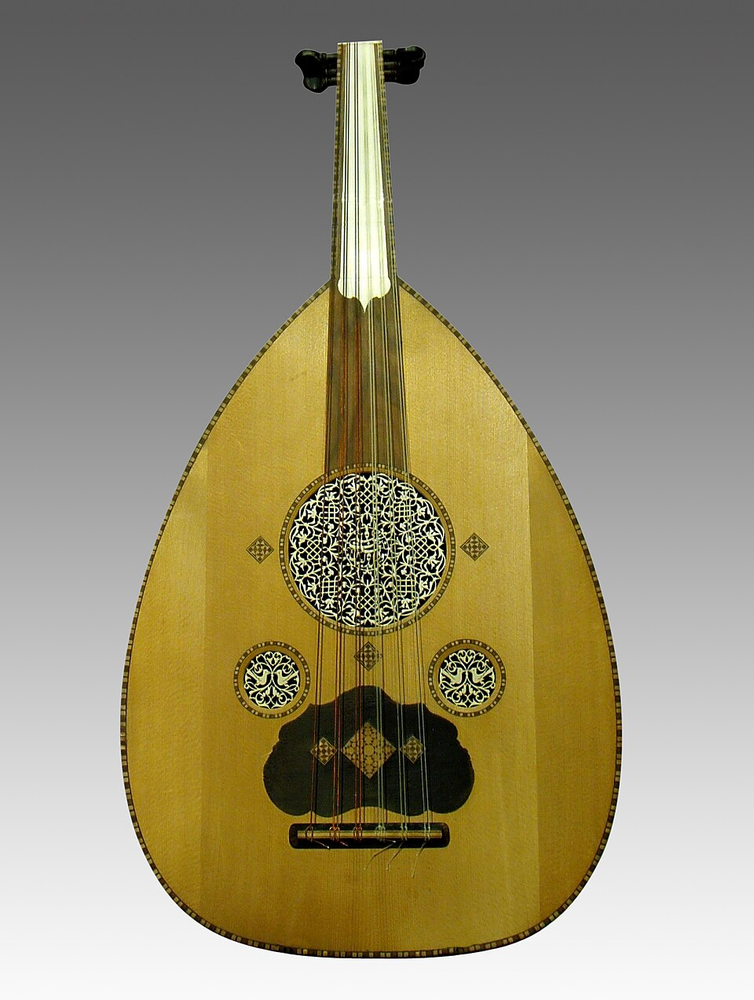
Origine et histoireLuth à manche court, hérité du monde arabe et de l’Andalousie ; central dans le takht andalou et le Melhoun.
FabricationCaisse bombée, rosace, cordes doubles (chœurs) ; quatre chœurs traditionnellement.
Technique de jeuPlectre (rîsha) ; solo mélodique et soutien harmonique.
Rôle musicalVoix mélodique et harmonique de l’orchestre andalou. Larousse précise que l’accompagnement instrumental andalou comprend « des luths (oûd-s et kwitra-s) ».
ÉvolutionInstrument emblématique de la musique savante ; facture standardisée.
La kouitra (kwitra) الكوترة / القويترةCordophone
Origine et histoireLuth à manche court proche du oud, associé à la musique arabo-andalouse maghrébine (Maroc, Algérie). Larousse le cite comme l’un des luths de l’orchestre andalou marocain.
FabricationQuatre cordes doubles sur chevillier coudé à l’ancienne ; caisse bombée avec une grande rosace centrale ; touche lisse sans frettes.
Technique de jeuPlectre (rîsha) en plume d’aigle ; accord : ré-la-mi-sol ou ré-sol-la-ré.
Rôle musicalAccompagnement dans la nouba andalouse ; répertoire spécifique.
ÉvolutionInstrument historique, encore joué dans les ensembles andalous (Ensemble Kwitra, Ahbab Cheikh Salah).
L’oud ramal عود الرملCordophone
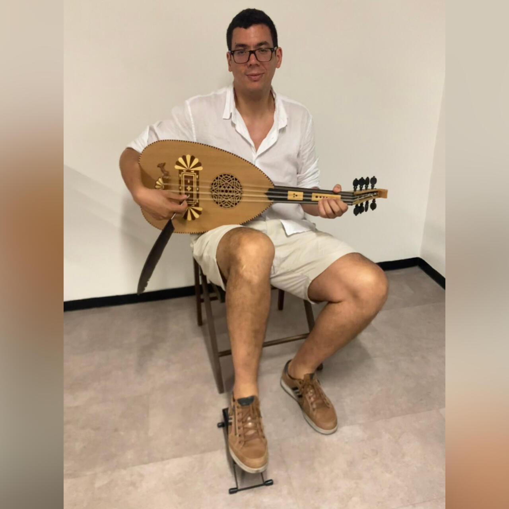
Origine et histoireLuth traditionnel de la musique arabo-andalouse marocaine, tombé en désuétude dans les années 1940 au profit du oud oriental, puis reconstitué par l’association Rawafid Moussiqia de Tanger.
FabricationQuatre cordes doubles avec un accordage particulier. Caisse robuste capable de supporter une forte tension.
Technique de jeuPlectre en plume d’aigle ; jeu ornementé.
Rôle musicalInstrument « prince des instruments » dans l’orchestre andalou marocain, aujourd’hui réhabilité.
ÉvolutionDisparu puis reconstitué au XXIe siècle ; des luthiers comme Khalid Belhaiba en fabriquent à nouveau (voir Bousselam 2022).
La kamanja et le rebab andalou الكمانجة / الربابCordophone
Origine et histoireLa kamanja est un violon joué à la verticale, appuyé sur le genou, particularité marocaine ; le rebab andalou est une vièle à deux cordes en forme de barque.
FabricationKamanja : lutherie de type violon ; rebab : caisse en barque, peau tendue.
Technique de jeuArchet ornementé ; position verticale pour la kamanja.
Rôle musicalVoix mélodiques principales de l’orchestre andalou. Larousse mentionne « des vièles et violons (rabâba-s et kamânja) ».
ÉvolutionLa kamanja est centrale dans les orchestres de al-âla et le Melhoun.
Le qanoun القانونCordophone
Origine et histoireCithare trapézoïdale du monde arabe, intégrée aux orchestres andalous et au tarab marocain.
FabricationNombreuses cordes, leviers (mandals) pour les micro-intervalles.
Technique de jeuCordes pincées avec des onglets ; timbre cristallin.
Rôle musicalMélodie et ornementation dans les orchestres savants.
ÉvolutionInstrument de lutherie savante, utilisé dans les conservatoires.
La tidinit تيدينيتCordophone
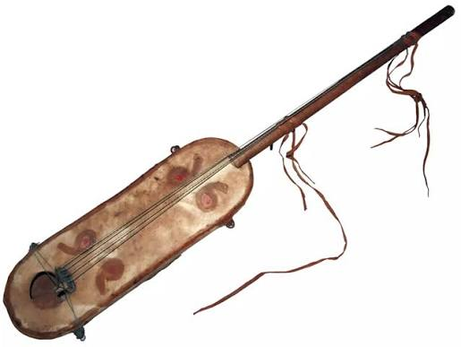
Origine et histoireLuth à long manche des traditions sahariennes (Maroc, Mauritanie) ; instrument masculin de la musique hassanie. Les sources mauritaniennes le décrivent comme un luth à quatre cordes, avec une caisse en bois évidée recouverte d’une peau de bœuf.
FabricationCaisse ovale recouverte de peau ; quatre cordes (deux jouées, deux sympathiques).
Technique de jeuPincé ; porte la mélodie et accompagne les poèmes. Jeu mélodique et rythmique.
Rôle musicalInstrument mélodique principal des veillées hassanies. La tidinit est l’instrument « primordial » de la musique de l’ensemble du Sahara occidental.
ÉvolutionParfois remplacé par la guitare électrique dans les formations modernes (voir l’album Hassānīya Music From The Western Sahara And Mauritania).
L’ardin الردين / آردينCordophone
Origine et histoireHarpe arquée des traditions sahariennes, réservée aux femmes (griottes iggawins). Instrument emblématique des femmes griottes.
FabricationCalebasse hémisphérique recouverte de peau de mouton, manche d’un mètre ou plus, 9 à 14 cordes (11 à 14 selon les sources).
Technique de jeuCordes pincées ; peut servir d’instrument à percussion. L’accordage de l’ardin donne une couleur modale spécifique (Dmin7sus4 selon les analyses).
Rôle musicalAccompagne les chants féminins et les rituels domestiques.
ÉvolutionInstrument rare, transmis dans un cadre familial.
Le swisdi (suissen) السويسديCordophone
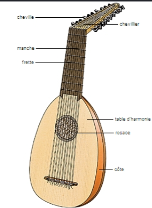
Origine et histoirePetit luth populaire de la famille du guembri, utilisé dans le chaâbi et l’aïta (région d’Abda, Safi).
FabricationCaisse en bois ou calebasse recouverte de peau ; manche tourné ; 2 à 4 cordes en nylon.
Technique de jeuPincé ; accompagne le chant populaire.
Rôle musicalMélodie dans les formations réduites de chaâbi et d’aïta.
ÉvolutionInstrument artisanal toujours fabriqué et joué.
Le mandole, le banjo et le violon occidental Cordophone
Le mandole est adopté dans le chaâbi et les formations populaires. Le banjo, introduit au XXe siècle, est très présent dans le chaâbi moderne et les groupes des années 1970 (Nass El Ghiwane, Jil Jilala). Le violon occidental (kamanja) est utilisé dans l’andaloussi, le Melhoun, l’aïta et le chaâbi, souvent joué verticalement. Les enregistrements de Christopher Wanklyn (1966) documentent le violon (kamenja) dans les formations de café et les rituels.
3.2 Instruments à percussion (membranophones et idiophones)
Le bendir (tallount, allun) البندير / تالونتMembranophone
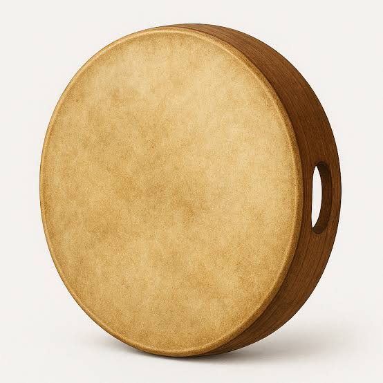
Origine et histoireTambour sur cadre attesté depuis longtemps dans les traditions amazighes ; présent dans tout le Maghreb. Décrit par Ahmed Aydoun comme un tambour de 70 cm de diamètre, avec peau de chèvre et trois ou quatre boyaux de résonance.
FabricationCadre en bois cintré (souvent 40 cm), peau de chèvre tendue. Cordes ou boyaux à l’intérieur pour le bourdonnement.
Technique de jeuTenu à la verticale, frappé des deux mains ; timbres différenciés au centre et au bord.
Rôle musicalAccompagnement dans l’ahwach, l’ahidous, le chaâbi, l’aïta et les rituels. Les enregistrements Folkways de 1966 le documentent dans les contextes Aïssawa, Gnawa et Ahouach.
ÉvolutionInstrument largement diffusé, fabriqué en petites séries.
Le bouznazel (buznazen, bendir à cymbales) البوزنازلMembranophone
Origine et histoireGros bendir avec cymbales, très présent chez les Aïssawa et dans les fêtes de mariage populaires. Également appelé buznazen ou ‘ajsâwî. Chez les Aïssawa, le bendir se distingue des autres modèles par son châssis pourvu de cymbalettes.
FabricationBendir basse de grande taille, avec cymbales fixées sur le cadre ; tension de peau élevée, produisant un son médium puissant.
Technique de jeuClaques très puissantes ; prend une place dominante dans l’orchestre lors des phases de transe.
Rôle musicalRythme et puissance sonore dans la hadra des Aïssawa.
ÉvolutionInstrument emblématique des confréries, toujours utilisé dans les rituels.
La tbila (tbilat) الطبيلةMembranophone
Crédit photo : Ressources Darbatook
Origine et histoirePetits tambours joués en paire, proches des bongos, présents dans les ensembles Aïssawa et certaines formations populaires. La BnF recense les tbîlat parmi les instruments reproduits dans les planches de Chottin (1939).
FabricationDeux petits fûts de tailles légèrement différentes, peaux tendues.
Technique de jeuFrappés à mains nues ou avec des baguettes fines ; jeu virtuose et polyrythmique.
Rôle musicalRythme et ornementation dans la musique confrérique. La tbila est l’un des instruments les mieux documentés de la tradition Aïssawa.
ÉvolutionInstrument artisanal, parfois remplacé par des bongos modernes.
La tassa الطاسةMembranophone / Idiophone
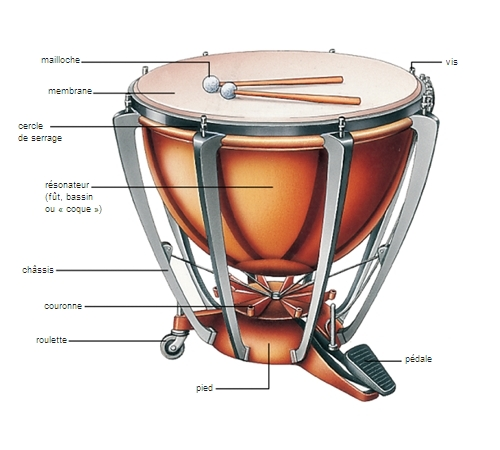
Crédit photo : Ressources Darbatook
Origine et histoireBol de cuivre joué avec des baguettes, utilisé dans les rituels Aïssawa et certaines formations populaires.
FabricationRécipient en cuivre ou en métal, sans membrane.
Technique de jeuFrappé avec des baguettes ; son métallique et résonnant.
Rôle musicalMarque le rythme et crée une texture sonore spécifique. Instrument rythmique mentionné dans les ensembles Aïssawa aux côtés du bouznazel et de la tbila.
ÉvolutionObjet détourné en instrument, conservé dans les confréries.
L’agoucil / agwal أكوال / أقوسيلMembranophone
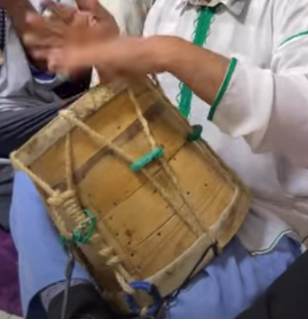
Origine et histoireTambour en forme de gobelet, d’origine berbère, similaire à la darbouka mais de taille plus grande. Également appelé agoucil chez les Hmadcha. La BnF mentionne l’aguâl parmi les instruments reproduits par Chottin.
FabricationCorps en terre cuite, peau unique peinte ; connu depuis le Moyen Âge.
Technique de jeuFrappé à la main ; joué par les hommes ou les femmes lors de festivités et processions.
Rôle musicalRythme dans l’ahwach et les rituels des Hmadcha (joué de l’épaule).
ÉvolutionInstrument artisanal, parfois en métal (agual).
La taarija التعريجةMembranophone
Origine et histoirePetite percussion en terre cuite, présente dans le chaâbi, l’aïta, l’issawa, le Melhoun et l’orchestre andalou. Instrument « emblématique de l’accompagnement du Melhoun ».
FabricationPoterie à ouverture couverte de peau ; forme tronconique.
Technique de jeuFrappée à la main ; son sec et boisé.
Rôle musicalBase rythmique, souvent en complément du bendir ou de la darbouka.
Origine et histoireTambour en forme de calice, largement diffusé dans le monde arabe et au Maroc.
FabricationCorps en métal ou en céramique, peau tendue.
Technique de jeuFrappée avec les doigts et la paume.
Rôle musicalBase rythmique du chaâbi, du tarab et de l’orchestre andalou.
ÉvolutionInstrument standardisé, souvent fabriqué industriellement.
Les qraqeb (krakeb) القراقبIdiophone
Origine et histoireCastagnettes métalliques de la tradition gnawa, également utilisées par les Hmadcha. Chottin les décrit comme des castagnettes métalliques d’origine « soudanaise ».
FabricationGrandes castagnettes doubles en fer forgé à la main.
Technique de jeuTenues dans chaque main ; entrechoquées pour un rythme répétitif.
Rôle musicalStructurent le rythme et accompagnent la transe. Indispensables au trio gnawa (guembri, qraqeb, chant).
ÉvolutionInstrument acoustique, parfois amplifié.
Le tbel / tbal الطبلMembranophone
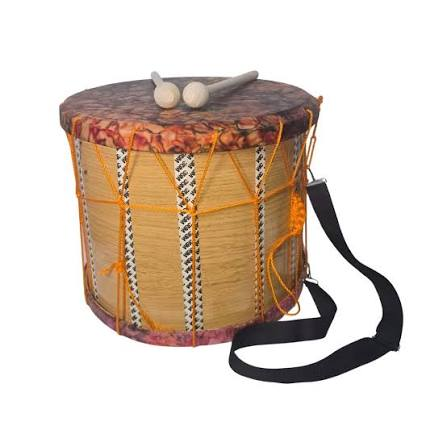
Origine et histoireGrand tambour cylindrique utilisé dans les processions, la lila gnawa, les rituels issawa et les fêtes. La BnF mentionne le tbel dans les planches de Chottin.
FabricationDeux peaux tendues sur un fût cylindrique.
Technique de jeuBaguettes courbe et droite.
Rôle musicalRythme puissant ; dans le trio gnawa, le duo guembri + qraqeb reste central. Les enregistrements de 1966 distinguent le tbel gnawa du gannega cylindrique.
ÉvolutionInstrument acoustique, parfois amplifié.
Le naqqous الناقوسIdiophone
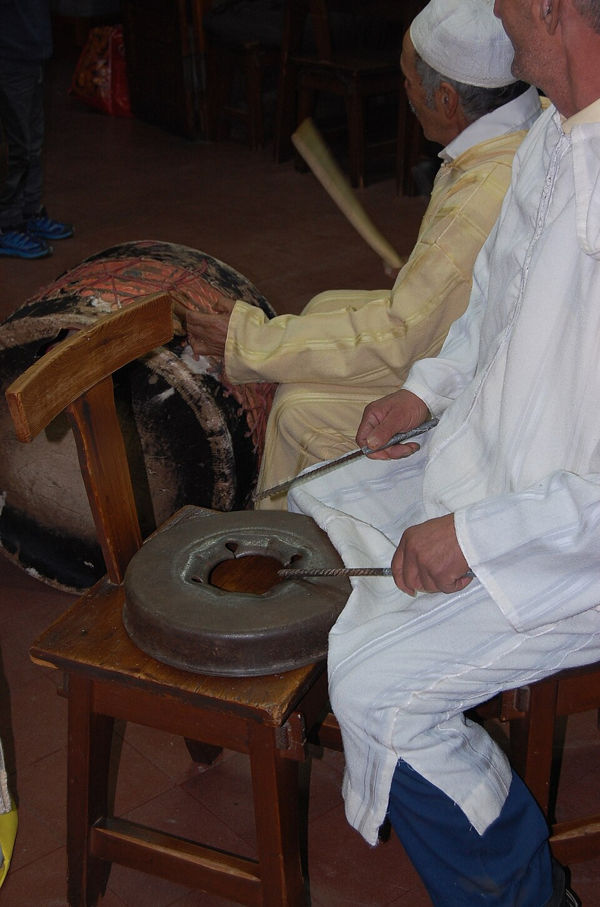
Origine et histoireInstrument métallique joué par les Rwaïss et dans les villages amazighs. L’encyclopédie SAGE le décrit comme une cloche à l’origine en tube de cuivre, aujourd’hui fabriquée à partir d’un tambour de frein de voiture et frappée avec deux baguettes métalliques.
FabricationMétal (cuivre, laiton, tambour de frein réutilisé) frappé avec des tiges de fer.
Technique de jeuFrappé comme un tambour ; accompagne le ribab et le lotar.
Rôle musicalAccompagnement rythmique dans les formations de Rwaïss.
ÉvolutionFacture variable, souvent improvisée.
La naqqara (naqarat) النقارة / النقاراتMembranophone
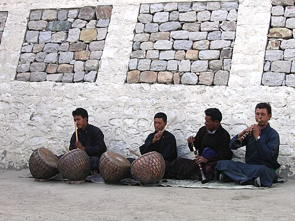
Origine et histoirePaire de petites timbales en terre cuite, utilisée dans les contextes rituels et processionnels, et dans l’orchestre andalou.
FabricationDeux pots en terre cuite reliés par des lanières de peau.
Technique de jeuFrappées avec des baguettes.
Rôle musicalRythme et signal dans les processions et les mariages.
ÉvolutionInstrument artisanal, parfois remplacé par des timbales modernes.
Le tar, le daff et le riq الطار / الدف / الرقMembranophones
TarTambourin sur cadre, utilisé dans l’andaloussi et les musiques savantes ; certaines variantes ont des cymbalettes.
DaffTambour sur cadre, parfois avec anneaux ou cymbalettes ; employé dans les chants spirituels et populaires. Les enregistrements de 1966 mentionnent un djouf (grand tambour sur cadre) dans les contextes rituels.
RiqPetit tambourin à cymbalettes, utilisé dans la musique arabo-andalouse et le tarab.
La sinja (sinia) الصنجة / الصينيةIdiophone
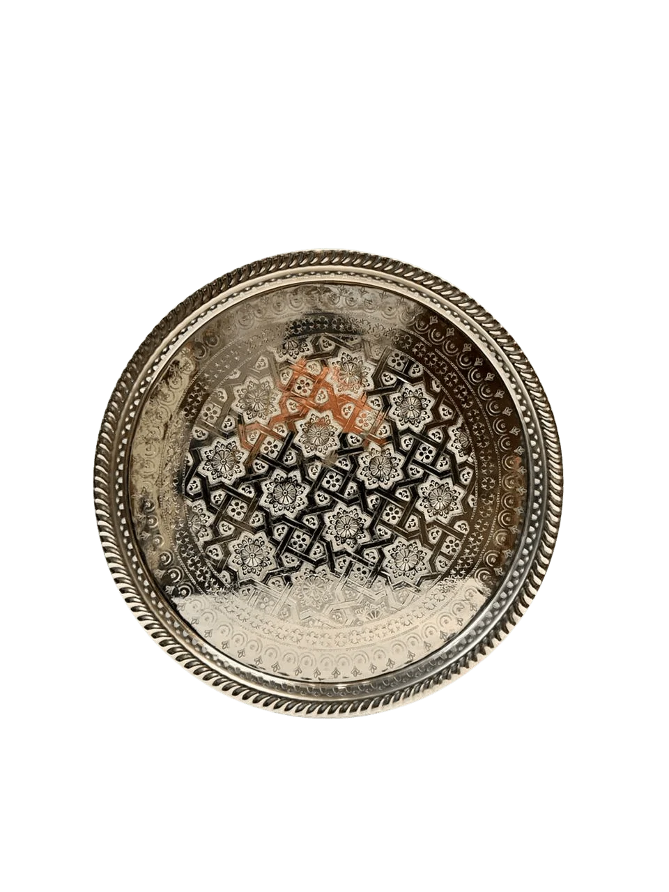
Origine et histoirePlateau métallique (plateau à thé) frappé avec des baguettes, emblématique de l’Aïta Chaïdmiya (Safi, Essaouira).
FabricationPlateau en métal, souvent un plateau de service à thé détourné.
Technique de jeuFrappé avec des baguettes ; produit un rythme aigu et métallique.
Rôle musicalMarque le rythme dans l’Aïta Chaïdmiya, aux côtés du megroune et du loutar.
ÉvolutionObjet du quotidien transformé en instrument, conservé dans cette tradition régionale.
Les ciseaux (mqass) المقصIdiophone
Origine et histoireInstrument rythmique des Abidat Rma (Chaouia), à l’origine utilisés pour tondre les moutons.
FabricationPaire de grands ciseaux en acier.
Technique de jeuEntrechoquement des lames, frappées avec une tige en acier.
Rôle musicalMarque le rythme et donne une couleur unique aux spectacles.
ÉvolutionInstrument emblématique conservé dans les performances traditionnelles.
La guedra القدرةMembranophone
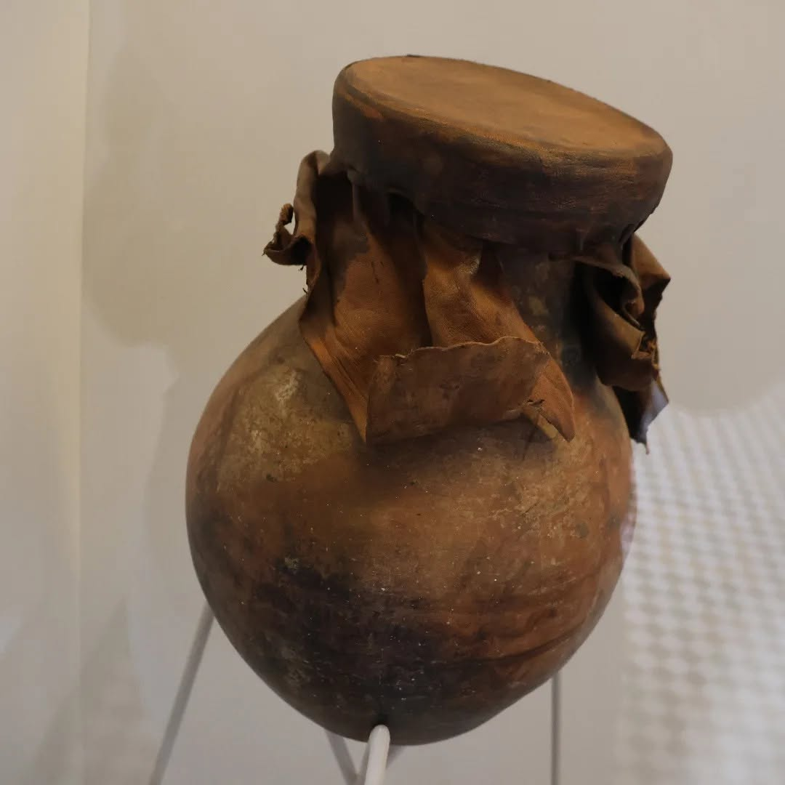
Origine et histoirePercussion en poterie saharienne, associée à la danse du même nom, pratiquée par les femmes.
FabricationPoterie recouverte de peau.
Technique de jeuFrappée à mains nues par les femmes.
Rôle musicalRythme des célébrations féminines et des transes.
ÉvolutionInstrument rituel conservé dans les pratiques féminines.
3.3 Instruments à vent (aérophones)
La ghaita (rhaïta) الغيطةAérophone
Origine et histoireHautbois à anche double, utilisé dans les processions, moussems, l’aïta, le rituel issawa et chez les Hmadcha. Également appelé rhaïta.
FabricationCorps en bois, anche double en roseau.
Technique de jeuSouffle continu, jeu énergique ; son puissant.
Rôle musicalMélodie et signal ; guide le rituel issawa. Larousse cite la « musette (ghaïta) » parmi les instruments populaires marocains.
ÉvolutionParfois amplifié dans les grandes processions.
Le megroune (magrouna, meghroune) المقرونةAérophone
Origine et histoireInstrument à vent à deux tuyaux et anches, caractéristique de l’Aïta Chaïdmiya (Safi, Essaouira). Version sans réservoir du mezoued.
FabricationDeux tuyaux mélodiques avec anches, sans sac (contrairement au mezoued).
Technique de jeuSouffle continu ; son « étrange » et envoûtant. Mentionné dans l’anthologie Chikhates et Chioukhs de l’Aïta aux côtés du luth, du loutar et du violon.
Rôle musicalMélodie principale dans l’Aïta Chaïdmiya, aux côtés du loutar et de la sinja.
ÉvolutionInstrument régional, moins répandu que la ghaita.
Le zamar (azamar) الزمّارAérophone
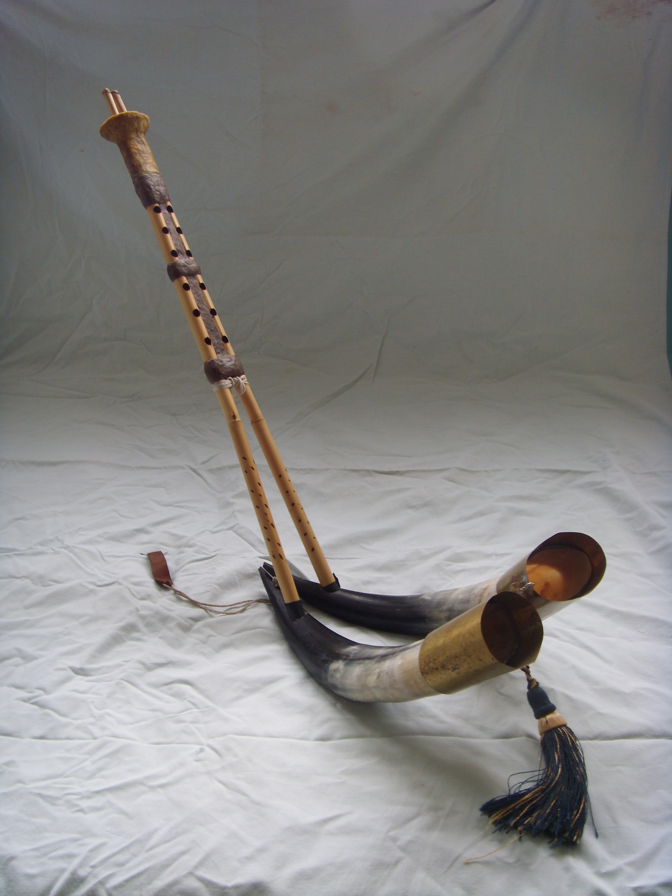
Origine et histoireClarinette double berbère du Rif oriental (Nador, Berkane, Driouch), jouée dans la Reggada et les fêtes. Ahmed Aydoun le cite parmi les instruments populaires, aux côtés de la gayta et de l’adjun (tambourin sur cadre).
FabricationDeux tuyaux de bambou (environ 42 cm) terminés par des cornes de vache ; anches simples liées à la cire d’abeille.
Technique de jeuSe joue face à face, en gonflant les joues ; son grave et bourdonnant.
Rôle musicalMélodie principale dans la Reggada.
ÉvolutionParfois remplacé par la ghaita ou le saxophone dans les formations modernes.
Le nay, la gasba et l’awad الناي / القصبة / العوادAérophone
NayFlûte en roseau des traditions savantes et soufies, ouverte aux deux extrémités.
GasbaFlûte en roseau utilisée dans la Reggada, les Jilala et les traditions populaires. La BnF mentionne la gasba dans les instruments reproduits par Chottin.
AwadFlûte traditionnelle en roseau attestée dans les traditions marocaines. Les enregistrements Smithsonian Folkways de 1966 documentent l’awad dans les contextes ruraux.
Le nifara / nafir النفارة / النفّارAérophone
Crédit photo : Université de Würzburg, collection d’instruments
Origine et histoireLongue trompette droite en métal, utilisée dans la musique hassanie, lors du Ramadan et par les Hmadcha (n’fir). La BnF mentionne la rhaïta nfîr dans les instruments reproduits par Chottin (1939).
FabricationLaiton ou cuivre, environ 1,50 m à 1,84 m, en trois parties.
Technique de jeuInstrument à vent ; son puissant et signalétique.
Rôle musicalSignal, appel, processions.
ÉvolutionConservé dans les traditions sahariennes et confrériques.
La zouzâya الزوزايةAérophone (à confirmer)
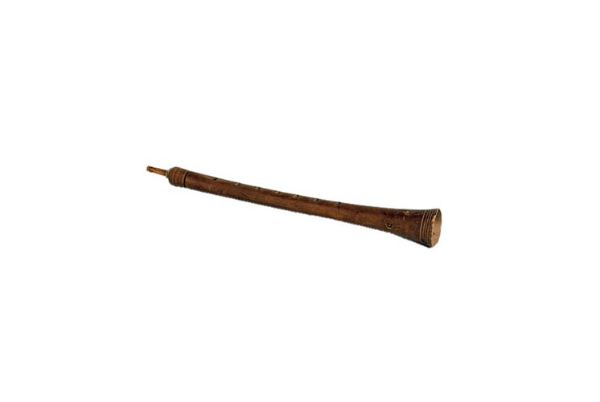
Origine et histoireInstrument mentionné dans les répertoires patrimoniaux hassanis.
Technique de jeuAssocié aux répertoires de poésie chantée saharienne.
Rôle musicalAccompagnement des chants et veillées.
ÉvolutionInstrument rare, à documenter.
3.4 Autres instruments et objets sonores
Au-delà des instruments classifiés, les pratiques musicales marocaines mobilisent des objets sonores : claquements de mains (tasfiq), sonnailles, crotales, bijoux métalliques, bâtons. Les Hmadcha utilisent des cymbales à main (qarqaba). Les Abidat Rma ont fait des ciseaux un instrument rythmique. Les Aïssawa frappent des bols de cuivre (tassa). La BnF recense également la ta’nja et le zamr parmi les instruments reproduits dans les planches de Chottin.
Note documentaire : certains noms comme agoucil, hajhuj ou bouznazel nécessitent encore une vérification ethnographique et régionale. Il ne faut pas confondre les variantes d’un même instrument avec des instruments totalement différents. Le catalogue Instruments des musiques populaires et de confréries au Maroc (Bpi, 1998) reste une référence pour croiser les appellations.